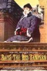
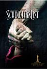
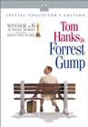
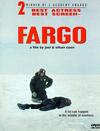
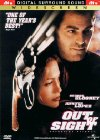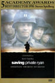
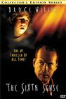
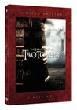
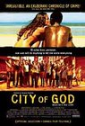
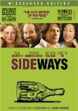
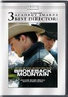


 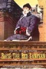
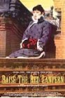
 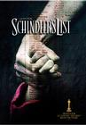
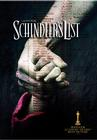
 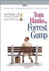
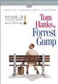 made it even more so.")


 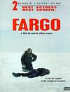
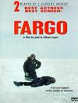


 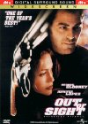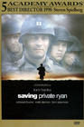
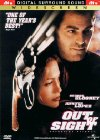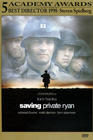


 got in an argument over this movie. My dad wanted to take me to see it, but my mom, more strict at the time, didn't want it to happen. At some point she finally gave in, but then we had to go see it in the cheaper, crappier theater. It was still amazing, of course. And as Bob can attest, at any given time my dad's house on Mountain Oak probably had the DVD of this or Fifth Element playing. It's too bad they never made any sequels to this. <i>None. Never.</i>")

 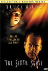
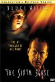


") 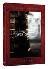
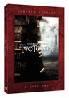


 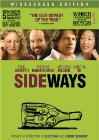
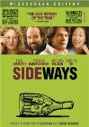 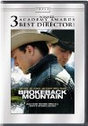
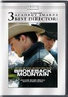


 was great. Some of the violence was pretty gruesome even considering it was Terantino. It made me remember having read someone comparing the Nazis watching Nation's Pride cheering the violence against the Allied soldiers to the audience cheering the violence on screen against the Nazis. Anyway, the inferno was pretty impressive and the face projected on the smoke was creepy cool.")